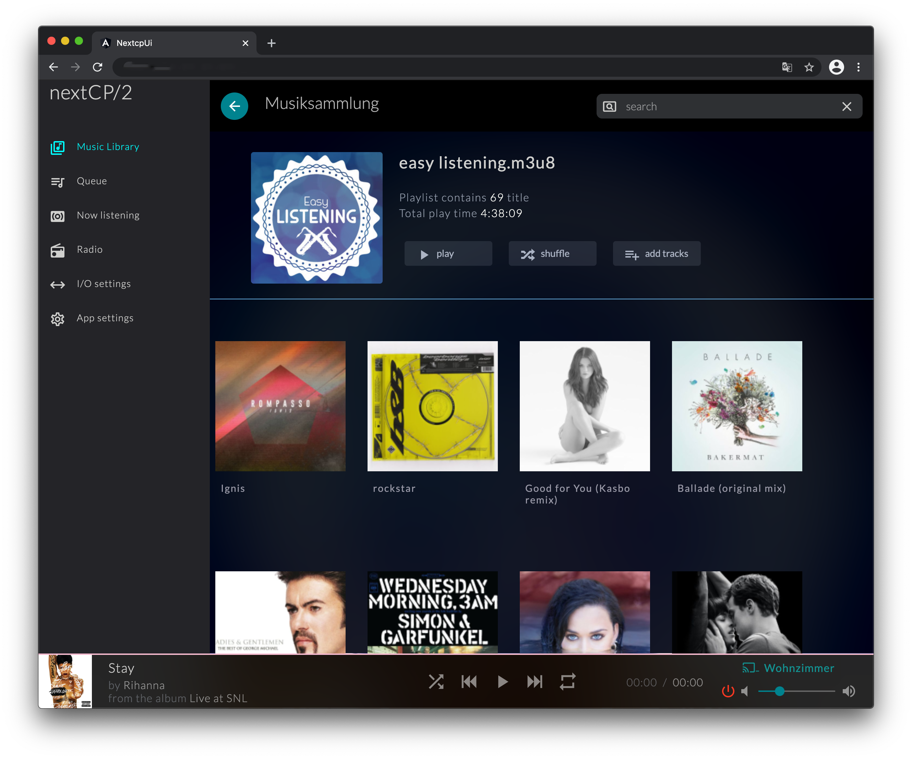
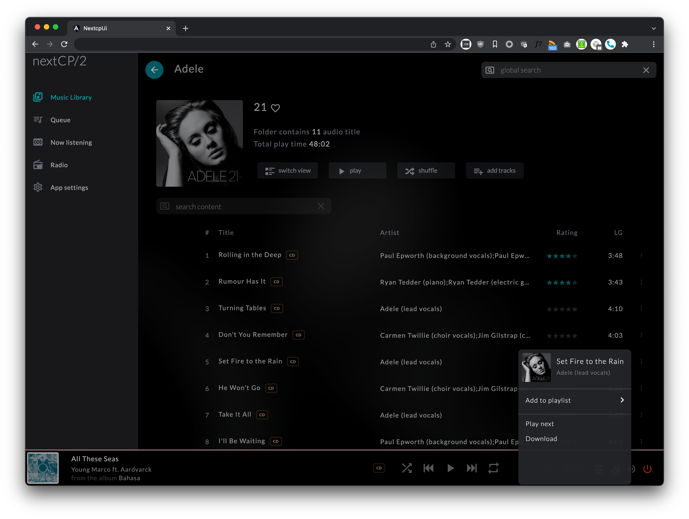
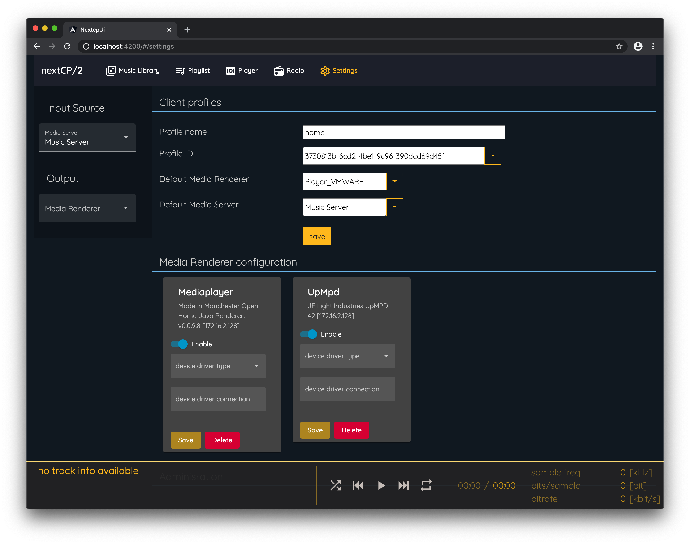

NextCP/2
This is a web-based UPnP control point. Most control point applications run on a single device. This control point
allows simultanious access from any device with a current Chrome based web-browser.
User Interface
Music Library
Before browsing your media library select a media server from the server popup button in the lower right corner,
or define a default media server in the App setting.
Folders, playlists and music items are displayed in separate sections.
General content browsing (folder view)
Depending on the content type an overlay with symbols appear to

- step into a folder or playlist
- delete current playlist and play all music items from this playlist
- add all music items to current playlist
Album view
While browsing into albums or server based playlists the view switches to a track based display. Additionally, more options are available:
- Pressing play will clear the current playlist, add all tracks and start playback.
- Pressing shuffle will clear the current playlist, add all tracks and start shuffle playback.
- Pressing add tracks will add all tracks to the current playlist.
For some features to work songs need to be identified uniquely. Therefore

- the content delivery server needs to provide additional metadata (musicBrainzID, disc id). Known working implementation is : Universal Media Server.
- audio files must be tagged with musicBrainzID (trackId / releaseId, numberOfThisDisc)
- rating support (media server / local file / personal musicbrainz.org account)
- add and remove songs to/from server side playlists
- file download
- liking albums
Multi Disc Support
Copy all audio files of your multi disc release in one folder and your songs will be sorted by disk and then by track ID.
For this to work, songs have to be tagged with correct numberOfThisDisc ID3 comments.

Playlist view
Browsing into playlists will switch to a condensed song view (default) and can be switched back to an album view by clicking on switch view button.

UPnP search
Entering text into the global search box initiates a search done by the media server.
Known media server with working UPnP search capabilities are Minimserver
and Universal Media Server (since 10.6.0).
Text will be matched against tracks, albums, playlists and artists


Queue (media renderer playlist)
Displays playlist of selected media player. The active song is highlighted. nextCP/2 supports native
OpenHome playlists, as well as self managed playlist for regular UPnP devices.
Click on any music item to listen to it - playback will continue after the song ends.
Radio
First rows consist of self managed Radio stations read from nextCP/2 configuration file. Next section displays radio
stations provided by the active player.
Click on the play symbol to play an online resource or radio station. Track and album informations are updated if
supported by the media renderer device.
Settings
Client profiles
Save and select a profile for default media server and media renderer. These defaults are saved browser specific.
The default devices will be automatically selected - if available - after entering or reloading the application.
Media renderer configuration
List af discovered media renderer. If enabled media renderer will be available for selection.
If the media renderer is attached to a physical receiver / AV-device with remote control capability (in example by a RS232 or TCP/IP port),
select a compatible device driver and enter a device driver configuration string. Device driver for McIntosh devices is available for download.
It is recommended to set the media rendere volume to 100% if a device driver is selected. The device
driver notices a device power on state and will apply a default volume on the physical device after powering up.

Features
Basically the features below are implemented. There might be some usage issues. Feel free to leave a ticket.
- Browse Content Directory Server
- Search Content Directory Server
- UPnP Playlist support
- Display artist image in search if spotify account is linked
- Liking of audio albums
- star rating support if songs are tagged with musicBrainzID
- import star rating from song files metadata section
- optional export star rating to musicBrainz (account required)
- optional save star rating into song files metadata section
- edit server based playlists
- Openhome Playlist support
- play web radio
- play OpenHome radio
Compatibility
Browser
This software is tested with the current Chrome browser on desktop and mobile devices, but should also work with
other chromium based browsers like Safari.
Content Delivery Server (media server)
By now, only universal media server supports all features and is the recommended media server.
This software has also been tested with
- Serviio : https://serviio.org/
- Minimserver (including minim-tag support) : https://minimserver.com/
Player (media renderer)
This software has been tested with MediaPlayer. This renderer also provides MusicBrainzID information for played
songs. This means server based playlist editing support is activated in Now listening view, if the song has embedded musicBrainzID metadata.
- MediaPlayer : https://github.com/PeteManchester/MediaPlayer